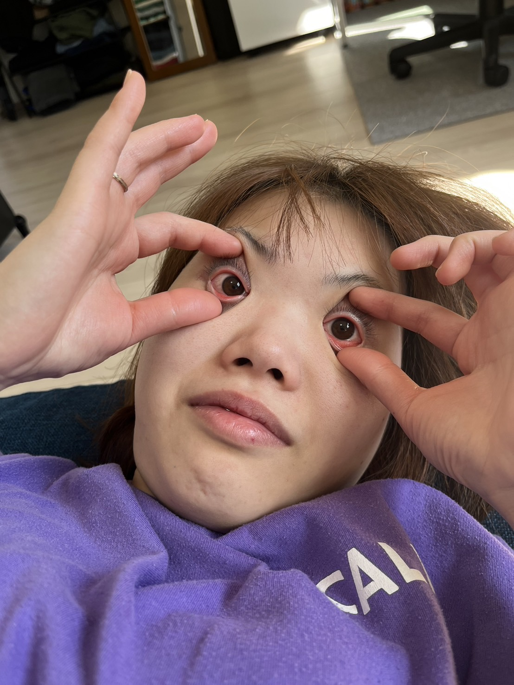
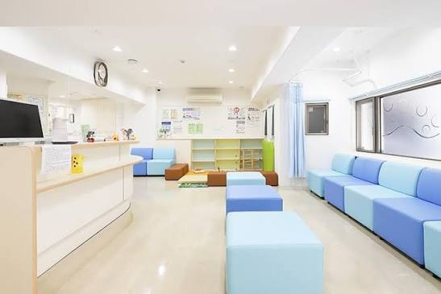
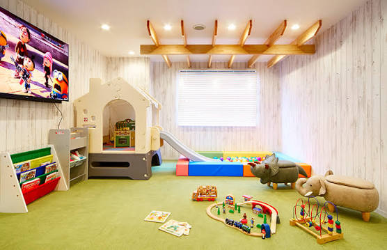
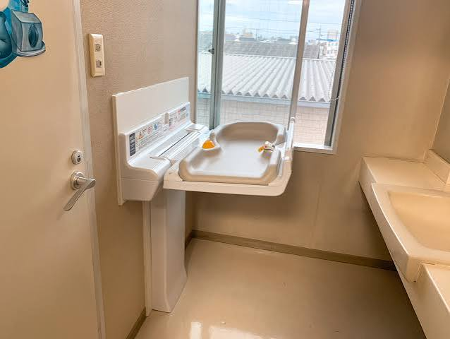

小児科・予防接種・乳幼児健診
年末年始の診療は、12月29日(火)〜1月3日(日)までお休みとさせていただきます。
〇月〇日(〇)は、都合により臨時休診とさせていただきます。ご迷惑をおかけしますがよろしくお願いいたします。
インフルエンザ予防接種の予約受付を開始しました。WEBまたはお電話にてご予約ください。
院内の絵本を新しく入れ替えました！待ち時間も楽しくお過ごしいただけます。
かぜ、発熱、腹痛など、お子様のあらゆる急な体調不良に対応します。
アトピー性皮膚炎、食物アレルギー、花粉症、気管支ぜんそくなどの検査・治療を行います。
あせも、おむつかぶれ、乳児湿疹など、お子様のデリケートな肌トラブルを優しく治療します。
離乳食の進め方やアレルギーの心配、夜泣きや発育に関するお悩みに丁寧にお答えします。
定期接種、任意接種に幅広く対応。スケジュール管理もお任せください。
お子様の健やかな発育と発達を、丁寧にサポート・確認いたします。


感染対策を徹底し、お子様がリラックスして待ち時間を過ごせるよう絵本やぬいぐるみをご用意しています。

靴を脱いで遊べるスペースです。おもちゃは定期的にアルコール消毒を行っています。

調乳用のお湯や、おむつ替え専用のシートを完備。安心してお越しください。
〒000-0000 東京都〇〇区〇〇町 1-2-3
📞 TEL: 03-0000-0000
| 診療時間 | 月 | 火 | 水 | 木 | 金 | 土 | 日 |
|---|---|---|---|---|---|---|---|
| 9:00 - 12:30 | ◯ | ◯ | ◯ | / | ◯ | ◯ | / |
| 15:00 - 18:00 | ◯ | ◯ | / | / | ◯ | ◯ | / |
【休診日】木曜・日曜・祝日
はい、ご受診いただけます。ただし、ご予約の患者様を優先してご案内するため、お待ちいただく場合がございます。可能な限りWEB予約をご利用ください。
はい、クリニックの目の前に10台分の無料駐車場をご用意しております。
はい、同時受診が可能です。ご予約の際、両方のメニューを選択してください。